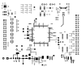
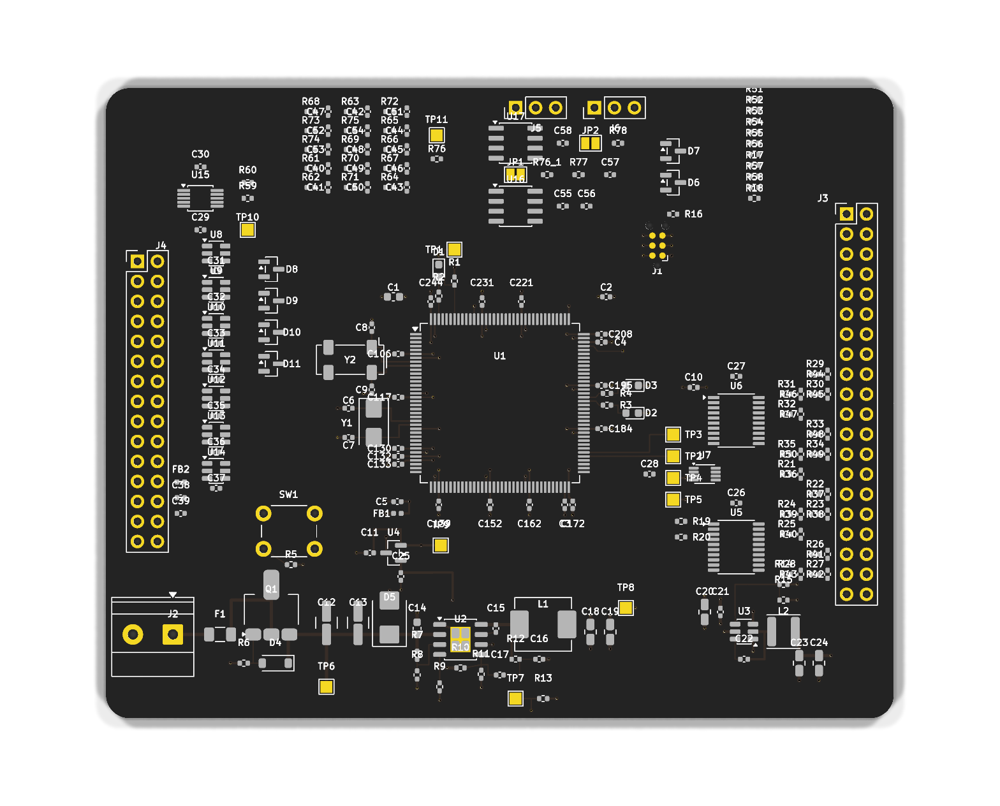
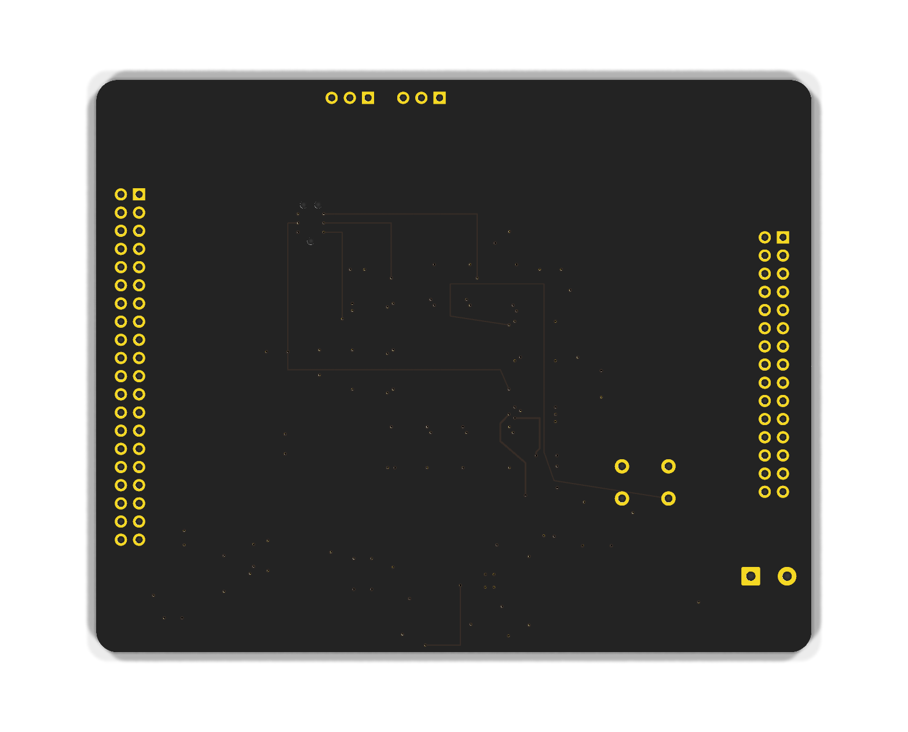

amaxa · branch cpu1 · commit c18f3e4 · 2026-09-17
The digital control board: one STM32H743ZIT6 generating every hard real-time signal — PWM, PWM-synchronised sampling, the hardware trip — for a purely analog power board soldered underneath it. This is the board as it stands after M7a, placed in full and routed in part.
board.mk says ROUTING := incomplete. The MCU core and the
power block are routed; the safety chain, trip comparators, ADC networks and both
field buses are placed only, and their 313 connections are left for M8, when the
whole board is in view. DRC runs in the mode that still refuses anything drawn
wrongly but does not demand what has not been drawn at all.
Plots
Plotted separately rather than stacked: a stacked plot of a board with three
filled planes is a solid rectangle. Every plot is generated from the same
.kicad_pcb the fab package comes from, by make review.

Renders
KiCad's raytracer, from the same board file. No 3D model library is installed in this environment, so parts appear as their bare land patterns — these are useful for spacing, connector access and silkscreen legibility, and for nothing else. In particular a footprint renders identically whether or not its pinout is right.


Blocks
Every part belongs to one block, named by the address it is built under in
cpu1.py — so this grouping is the design's own, not a reading of the
schematic after the fact.
| Ref | Address | Value | Part number | LCSC | Footprint | Block |
|---|
Connectivity
22 nets are ERC waivers: each has exactly one connection because the block at its other end is not drawn yet, and a check requires that to stay true — once the block lands, the waiver has to go. They are marked below.
| Net | Nodes | Status |
|---|